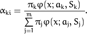

Expectation Maximization¶
The Expectation Maximization(EM) algorithm estimates the parameters of the multivariate probability density function in the form of a Gaussian mixture distribution with a specified number of mixtures.
Consider the set of the N feature vectors { } from a d-dimensional Euclidean space drawn from a Gaussian mixture:
where
 is the number of mixtures,
is the normal distribution
density with the mean
is the number of mixtures,
is the normal distribution
density with the mean
 and covariance matrix
and covariance matrix
 ,
is the weight of the k-th mixture. Given the number of mixtures
and the samples
,
is the weight of the k-th mixture. Given the number of mixtures
and the samples
 ,
the algorithm finds the
maximum-likelihood estimates (MLE) of all the mixture parameters,
that is,
,
and
:
,
the algorithm finds the
maximum-likelihood estimates (MLE) of all the mixture parameters,
that is,
,
and
:
The EM algorithm is an iterative procedure. Each iteration includes
two steps. At the first step (Expectation step or E-step), you find a
probability
(denoted
in the formula below) of
sample i to belong to mixture k using the currently
available mixture parameter estimates:

At the second step (Maximization step or M-step), the mixture parameter estimates are refined using the computed probabilities:
Alternatively, the algorithm may start with the M-step when the initial values for
can be provided. Another alternative when
are unknown is to use a simpler clustering algorithm to pre-cluster the input samples and thus obtain initial
. Often (including machine learning) the
kmeans() algorithm is used for that purpose.
One of the main problems of the EM algorithm is a large number
of parameters to estimate. The majority of the parameters reside in
covariance matrices, which are
elements each
where
is the feature space dimensionality. However, in
many practical problems, the covariance matrices are close to diagonal
or even to
 , where
is an identity matrix and
, where
is an identity matrix and
 is a mixture-dependent “scale” parameter. So, a robust computation
scheme could start with harder constraints on the covariance
matrices and then use the estimated parameters as an input for a less
constrained optimization problem (often a diagonal covariance matrix is
already a good enough approximation).
is a mixture-dependent “scale” parameter. So, a robust computation
scheme could start with harder constraints on the covariance
matrices and then use the estimated parameters as an input for a less
constrained optimization problem (often a diagonal covariance matrix is
already a good enough approximation).
References:
- Bilmes98 J. A. Bilmes. A Gentle Tutorial of the EM Algorithm and its Application to Parameter Estimation for Gaussian Mixture and Hidden Markov Models. Technical Report TR-97-021, International Computer Science Institute and Computer Science Division, University of California at Berkeley, April 1998.
EM¶
-
class
EM: publicAlgorithm¶
The class implements the EM algorithm as described in the beginning of this section. It is inherited from Algorithm.
EM::EM¶
The constructor of the class
-
C++:
EM::EM(int nclusters=EM::DEFAULT_NCLUSTERS, int covMatType=EM::COV_MAT_DIAGONAL, const TermCriteria& termCrit=TermCriteria(TermCriteria::COUNT+TermCriteria::EPS, EM::DEFAULT_MAX_ITERS, FLT_EPSILON) )¶
-
Python:
cv2.EM([nclusters[, covMatType[, termCrit]]]) → <EM object>¶ Parameters: - nclusters – The number of mixture components in the Gaussian mixture model. Default value of the parameter is
EM::DEFAULT_NCLUSTERS=5. Some of EM implementation could determine the optimal number of mixtures within a specified value range, but that is not the case in ML yet. - covMatType –
Constraint on covariance matrices which defines type of matrices. Possible values are:
- EM::COV_MAT_SPHERICAL A scaled identity matrix
 . There is the only parameter to be estimated for each matrix. The option may be used in special cases, when the constraint is relevant, or as a first step in the optimization (for example in case when the data is preprocessed with PCA). The results of such preliminary estimation may be passed again to the optimization procedure, this time with
. There is the only parameter to be estimated for each matrix. The option may be used in special cases, when the constraint is relevant, or as a first step in the optimization (for example in case when the data is preprocessed with PCA). The results of such preliminary estimation may be passed again to the optimization procedure, this time with covMatType=EM::COV_MAT_DIAGONAL. - EM::COV_MAT_DIAGONAL A diagonal matrix with positive diagonal elements. The number of free parameters is
dfor each matrix. This is most commonly used option yielding good estimation results. - EM::COV_MAT_GENERIC A symmetric positively defined matrix. The number of free parameters in each matrix is about
 . It is not recommended to use this option, unless there is pretty accurate initial estimation of the parameters and/or a huge number of training samples.
. It is not recommended to use this option, unless there is pretty accurate initial estimation of the parameters and/or a huge number of training samples.
- EM::COV_MAT_SPHERICAL A scaled identity matrix
- termCrit – The termination criteria of the EM algorithm. The EM algorithm can be terminated by the number of iterations
termCrit.maxCount(number of M-steps) or when relative change of likelihood logarithm is less thantermCrit.epsilon. Default maximum number of iterations isEM::DEFAULT_MAX_ITERS=100.
- nclusters – The number of mixture components in the Gaussian mixture model. Default value of the parameter is
EM::train¶
Estimates the Gaussian mixture parameters from a samples set.
-
C++:
EM::train(InputArray samples, OutputArray logLikelihoods=noArray(), OutputArray labels=noArray(), OutputArray probs=noArray())¶
-
C++:
EM::trainE(InputArray samples, InputArray means0, InputArray covs0=noArray(), InputArray weights0=noArray(), OutputArray logLikelihoods=noArray(), OutputArray labels=noArray(), OutputArray probs=noArray())¶
-
C++:
EM::trainM(InputArray samples, InputArray probs0, OutputArray logLikelihoods=noArray(), OutputArray labels=noArray(), OutputArray probs=noArray())¶
-
Python:
cv2.EM.train(samples[, logLikelihoods[, labels[, probs]]]) → retval, logLikelihoods, labels, probs¶
-
Python:
cv2.EM.trainE(samples, means0[, covs0[, weights0[, logLikelihoods[, labels[, probs]]]]]) → retval, logLikelihoods, labels, probs¶
-
Python:
cv2.EM.trainM(samples, probs0[, logLikelihoods[, labels[, probs]]]) → retval, logLikelihoods, labels, probs¶ Parameters: - samples – Samples from which the Gaussian mixture model will be estimated. It should be a one-channel matrix, each row of which is a sample. If the matrix does not have
CV_64Ftype it will be converted to the inner matrix of such type for the further computing. - means0 – Initial means of mixture components. It is a one-channel matrix of
 size. If the matrix does not have
size. If the matrix does not have CV_64Ftype it will be converted to the inner matrix of such type for the further computing. - covs0 – The vector of initial covariance matrices of mixture components. Each of covariance matrices is a one-channel matrix of size. If the matrices do not have
CV_64Ftype they will be converted to the inner matrices of such type for the further computing. - weights0 – Initial weights of mixture components. It should be a one-channel floating-point matrix with or
 size.
size. - probs0 – Initial probabilities of sample
 to belong to mixture component
to belong to mixture component  . It is a one-channel floating-point matrix of
. It is a one-channel floating-point matrix of  size.
size. - logLikelihoods – The optional output matrix that contains a likelihood logarithm value for each sample. It has size and
CV_64FC1type. - labels – The optional output “class label” for each sample: (indices of the most probable mixture component for each sample). It has size and
CV_32SC1type. - probs – The optional output matrix that contains posterior probabilities of each Gaussian mixture component given the each sample. It has size and
CV_64FC1type.
- samples – Samples from which the Gaussian mixture model will be estimated. It should be a one-channel matrix, each row of which is a sample. If the matrix does not have
Three versions of training method differ in the initialization of Gaussian mixture model parameters and start step:
- train - Starts with Expectation step. Initial values of the model parameters will be estimated by the k-means algorithm.
- trainE - Starts with Expectation step. You need to provide initial means of mixture components. Optionally you can pass initial weights and covariance matrices of mixture components.
- trainM - Starts with Maximization step. You need to provide initial probabilities to use this option.
The methods return true if the Gaussian mixture model was trained successfully, otherwise it returns false.
Unlike many of the ML models, EM is an unsupervised learning algorithm and it does not take responses (class labels or function values) as input. Instead, it computes the
Maximum Likelihood Estimate of the Gaussian mixture parameters from an input sample set, stores all the parameters inside the structure:
in probs,
in means ,
in covs[k],
in weights , and optionally computes the output “class label” for each sample:
(indices of the most probable mixture component for each sample).
The trained model can be used further for prediction, just like any other classifier. The trained model is similar to the
CvNormalBayesClassifier.
EM::predict¶
Returns a likelihood logarithm value and an index of the most probable mixture component for the given sample.
-
C++:
EM::predict(InputArray sample, OutputArray probs=noArray())const¶
-
Python:
cv2.EM.predict(sample[, probs]) → retval, probs¶ Parameters: - sample – A sample for classification. It should be a one-channel matrix of or size.
- probs – Optional output matrix that contains posterior probabilities of each component given the sample. It has size and
CV_64FC1type.
The method returns a two-element double vector. Zero element is a likelihood logarithm value for the sample. First element is an index of the most probable mixture component for the given sample.
CvEM::isTrained¶
Returns true if the Gaussian mixture model was trained.
-
C++:
EM::isTrained()const¶
-
Python:
cv2.EM.isTrained() → retval¶
EM::read, EM::write¶
See Algorithm::read() and Algorithm::write().
EM::get, EM::set¶
See Algorithm::get() and Algorithm::set(). The following parameters are available:
"nclusters""covMatType""maxIters""epsilon""weights"(read-only)"means"(read-only)"covs"(read-only)
Help and Feedback
You did not find what you were looking for?- Ask a question on the Q&A forum.
- If you think something is missing or wrong in the documentation, please file a bug report.